1.Redis与SQL
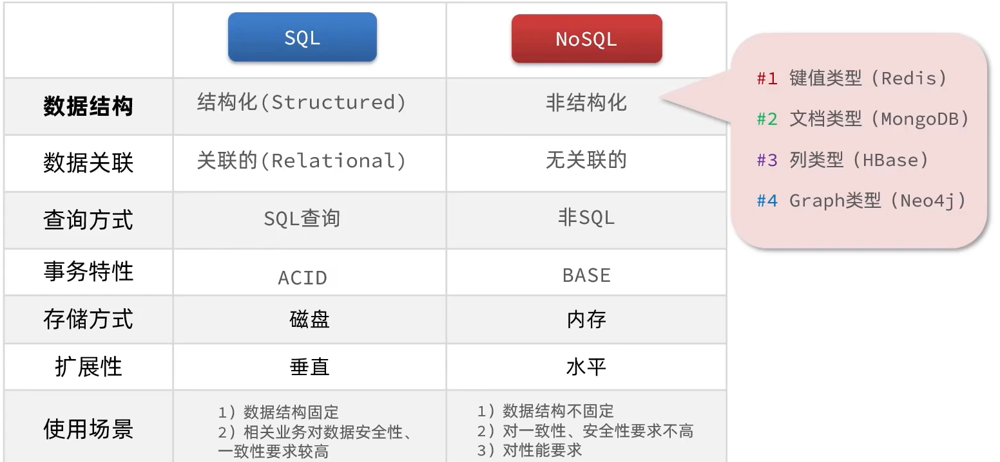
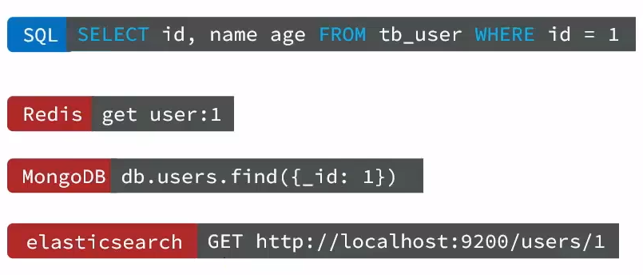
| SQL | NoSQL | |
|---|---|---|
| 数据结构 | 结构化 | 非结构化 |
| 数据关联 | 关联的 | 无关联的 |
| 查询方式 | SQL查询 | 非SQL |
| 事务特性 | ACID | BASE |
| 存储方式 | 磁盘 | 内存 |
| 扩展性 | 垂直 | 水平 |
| 使用场景 | 1）数据结构固定 2）相关业务对数据安全性、一致性要求较高 | 1）数据结构不固定 2）对一致性、安全性要求不高 3）对性能要求 |
- NoSQL最常见的解释是”
non-relational“， 很多人也说它是”Not Only SQL“ - NoSQL仅仅是一个概念，泛指非关系型的数据库
- 区别于关系数据库，它们不保证关系数据的ACID特性
- NoSQL是一项全新的数据库革命性运动，提倡运用非关系型的数据存储，相对于铺天盖地的关系型数据库运用，这一概念无疑是一种全新的思维的注入
- 常见的NoSQL数据库有：
Redis、MemCache、MongoDB等
2.Redis简介
Redis诞生于2009年，全称Remote Dictionary Server，远程词典服务器，是一个基于内存的键值型NoSQL数据库
特征：
- 键值型（key-value）型，value支持多种不同的数据结构，功能丰富
- 单线程，每个命令具备原子性
- 低延迟，速度快（基于内存、IO多路复用、良好的编码）
- 支持数据持久化
- 支持主从集群、分片集群
- 支持多语言客户端
3.Redis安装
3.1 环境准备
本次安装Redis是基于Linux系统下安装的，因此需要一台Linux服务器或者虚拟机
- 虚拟机：VMware17
- 操作系统：CentOS-7-x86_64
- Redis：redis-6.2.6.tar
- xShell及xFtp：https://www.xshell.com/zh/free-for-home-school/
3.2 安装Redis依赖
Redis是基于C语言编写的，因此首先需要安装Redis所需要的gcc依赖
1 | yum install -y gcc tcl |
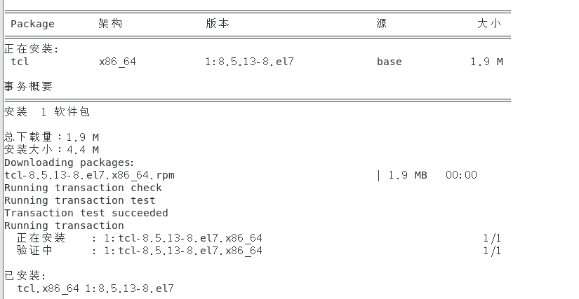
3.3 正式安装Redis
将
redis-6.2.6.tar上传至/usr/local/src目录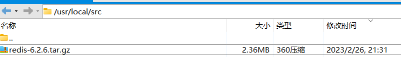
在xShell中
cd到/usr/local/src目录执行以下命令进行解压操作1
tar -xzf redis-6.2.6.tar.gz
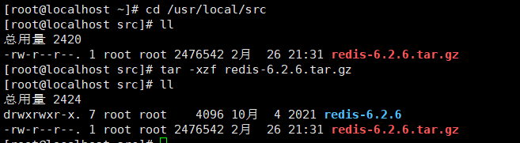
解压成功后依次执行以下命令
1
2cd redis-6.2.6
make && make install安装成功后打开/usr/local/bin目录（该目录为Redis默认的安装目录）
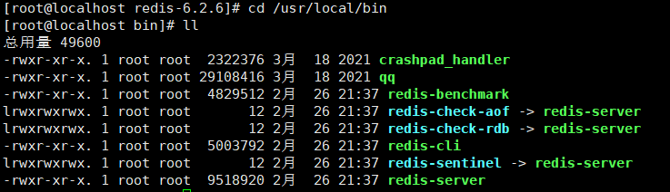
- 该目录已经默认环境配置到环境变量，因此可以在任意目录下运行这些目录。其中：
- redis-cli：是redis提供的命令行客户端
- redis-server：是redis的服务端启动脚本
- redis-sentinel：是redis的哨兵启动脚本
- 该目录已经默认环境配置到环境变量，因此可以在任意目录下运行这些目录。其中：
3.4 启动Redis
Redis的启动方式有很多种，例如：前台启动、后台启动、开机自启
3.4.1 前台启动（不推荐）
这种启动属于前台启动，会阻塞整个会话窗口，窗口关闭或者按下
CTRL + C则Redis停止。不推荐使用。
安装完成后，在任意目录输入
redis-server命令即可启动Redis1
redis-server
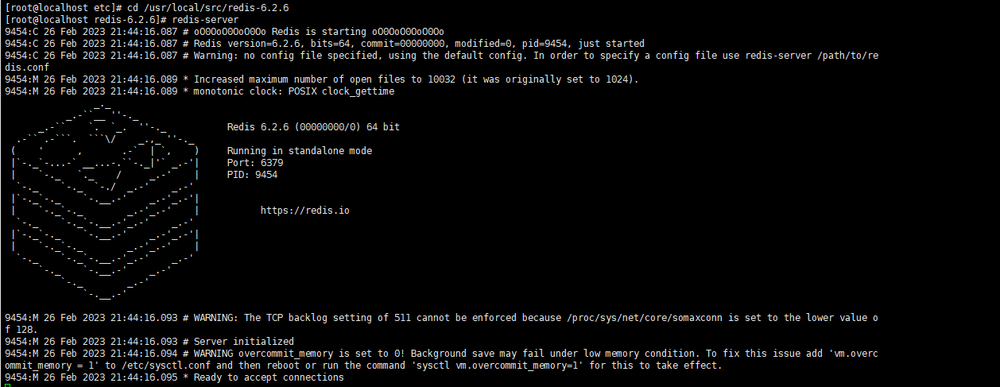
3.4.2 后台启动（不推荐）
如果要让Redis以后台方式启动，则必须修改Redis配置文件，配置文件所在目录就是之前我们解压的安装包下
因为我们要修改配置文件，因此我们需要先将原文件备份一份
1
cd /usr/local/src/redis-6.2.6
1
cp redis.conf redis.conf.bck
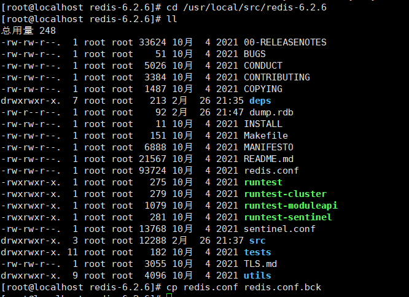
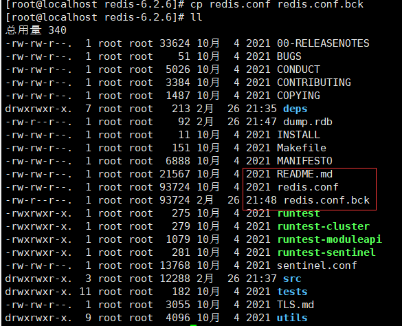
然后修改
redis.conf文件中的一些配置1
2
3
4
5
6# 允许访问的地址，默认是127.0.0.1，会导致只能在本地访问。修改为0.0.0.0则可以在任意IP访问，生产环境不要设置为0.0.0.0
bind 0.0.0.0
# 守护进程，修改为yes后即可后台运行
daemonize yes
# 密码，设置后访问Redis必须输入密码
requirepass 1325Redis其他常用配置
1
2
3
4
5
6
7
8
9
10# 监听的端口
port 6379
# 工作目录，默认是当前目录，也就是运行redis-server时的命令，日志、持久化等文件会保存在这个目录
dir .
# 数据库数量，设置为1，代表只使用1个库，默认有16个库，编号0~15
databases 1
# 设置redis能够使用的最大内存
maxmemory 512mb
# 日志文件，默认为空，不记录日志，可以指定日志文件名
logfile "redis.log"启动Redis
1
2
3
4# 进入redis安装目录
cd /usr/local/src/redis-6.2.6
# 启动
redis-server redis.conf停止Redis服务
1
2# 通过kill命令直接杀死进程
kill -9 redis进程id1
2
3# 利用redis-cli来执行 shutdown 命令，即可停止 Redis 服务，
# 因为之前配置了密码，因此需要通过 -a 来指定密码
redis-cli -a 132537 shutdown
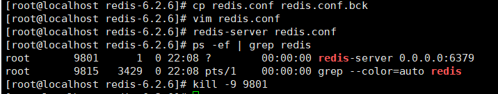
3.4.3 开机自启（推荐）
也可以通过配置来实现开机自启
首先，新建一个系统服务文件
1
vim /etc/systemd/system/redis.service
将以下命令粘贴进去
1
2
3
4
5
6
7
8
9
10
11[Unit]
Description=redis-server
After=network.target
[Service]
Type=forking
ExecStart=/usr/local/bin/redis-server /usr/local/src/redis-6.2.6/redis.conf
PrivateTmp=true
[Install]
WantedBy=multi-user.target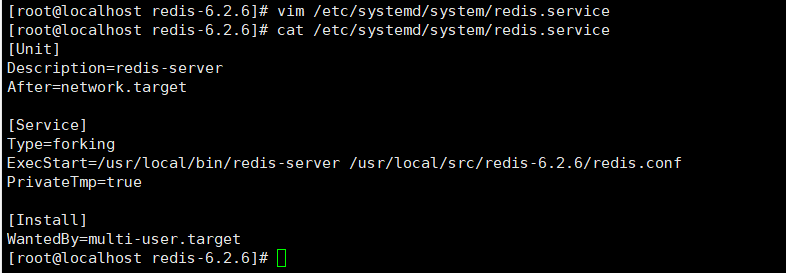
然后重载系统服务
1
systemctl daemon-reload
现在，可以用下面这组命令来操作redis了
1
2
3
4
5
6
7
8# 启动
systemctl start redis
# 停止
systemctl stop redis
# 重启
systemctl restart redis
# 查看状态
systemctl status redis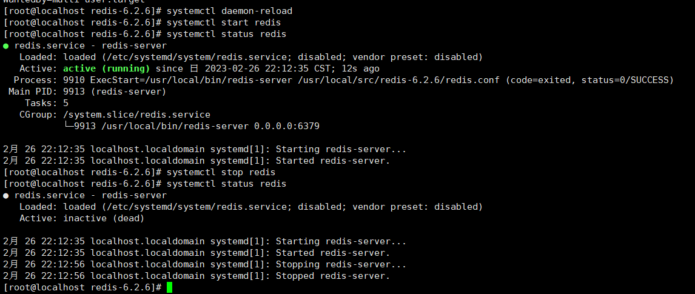
执行下面的命令，可以让redis开机自启
1
systemctl enable redis
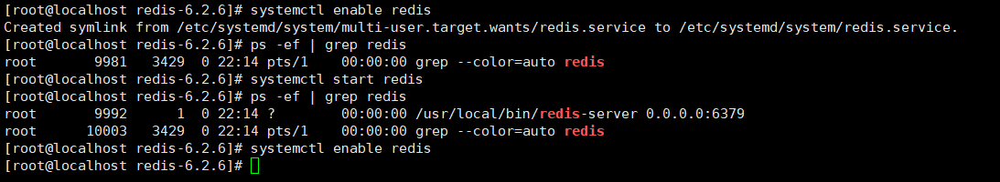
4.Redis客户端
4.1 Redis命令行客户端
Redis安装完成后就自带了命令行客户端：
redis-cli，使用方式如下：1
redis-cli [options] [commonds]
其中常见的
options有：-h 127.0.0.1：指定要连接的redis节点的IP地址，默认是127.0.0.1-p 6379：指定要连接的redis节点的端口，默认是6379-a 132537：指定redis的访问密码
其中的
commonds就是Redis的操作命令，例如：ping：与redis服务端做心跳测试，服务端正常会返回pong不指定commond时，会进入
redis-cli的交互控制台：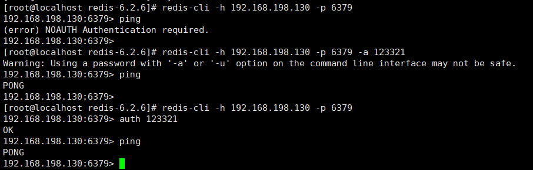
4.2 Redis图形化桌面客户端
下载地址：https://github.com/lework/RedisDesktopManager-Windows/releases?q=2021.9&expanded=true
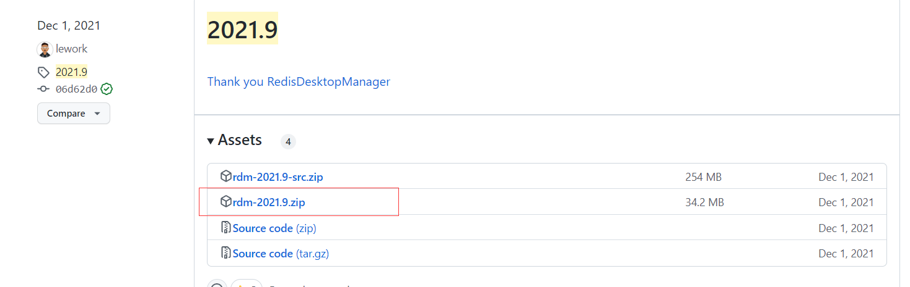
安装图形化客户端
如何连接到Redis
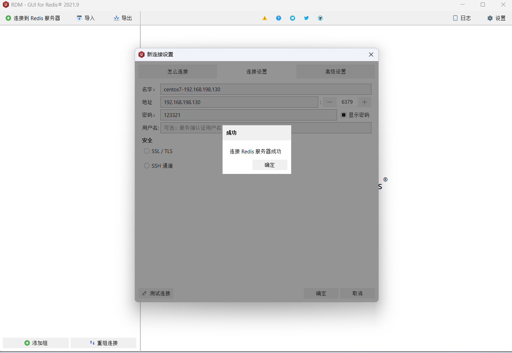
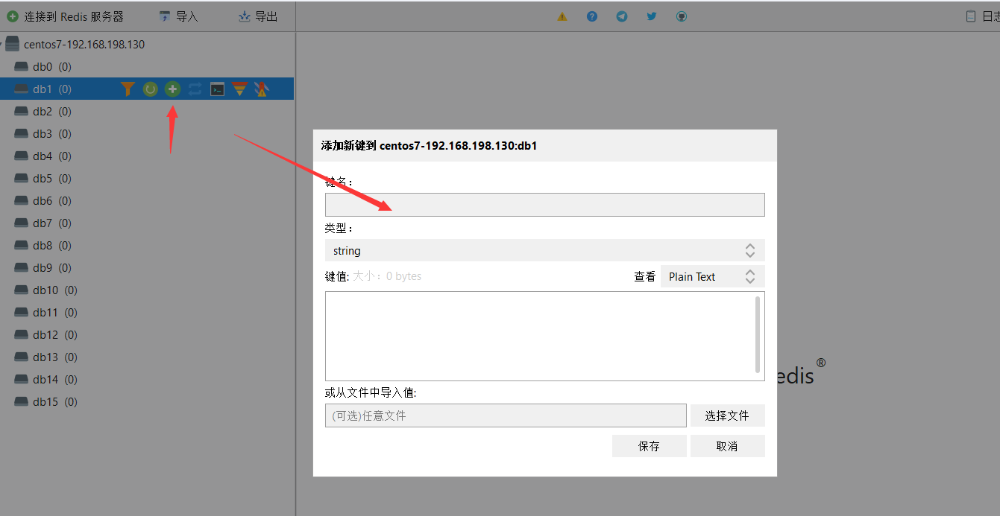
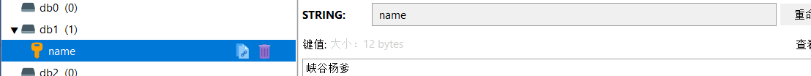
4.3 Redis编程客户端
详情见第六章
5.Redis常见命令
官方文档：https://redis.io/commands/
数据结构：https://redis.io/docs/data-types/
| 符合 | 含义 | 简介 |
|---|---|---|
5.1 Redis数据结构介绍
- Redis是一个key-value的数据库，key一般是String类型，不过value的类型多种多样
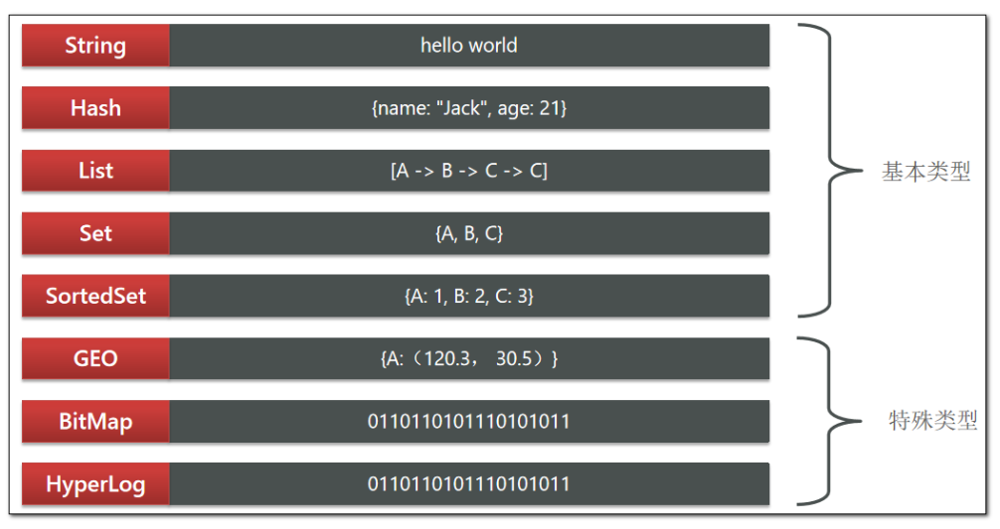
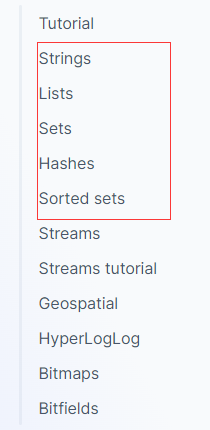
5.2 通用命令
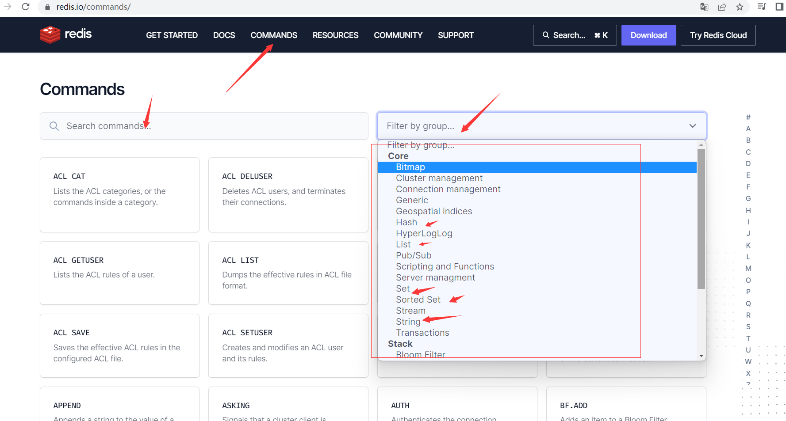
通用指令是部分数据类型的，都可以使用的指令，常见的有如下表格所示
| 指令 | 描述 |
|---|---|
| KEYS | 查看符合模板的所有key，不建议在生产环境设备上使用 |
| DEL | 删除一个指定的key |
| EXISTS | 判断key是否存在 |
| EXPIRE | 给一个key设置有效期，有效期到期时该key会被自动删除 |
| TTL | 查看一个KEY的剩余有效期 |
可以通过help [command] 可以查看一个命令的具体用法！
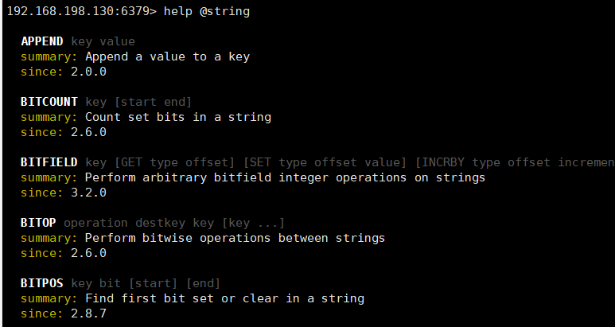
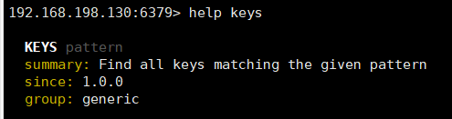
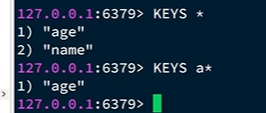
1 | 127.0.0.1:6379> keys * |
5.3 String类型
String类型，也就是字符串类型，是Redis中最简单的存储类型。
- value是字符串，不过根据字符串的格式不同，又可以分为3类：
string：普通字符串int：整数类型，可以做自增、自减操作float：浮点类型，可以做自增、自减操作
不管是哪种格式，底层都是字节数组形式存储，只不过是编码方式不同。字符串类型的最大空间不能超过512m.
| KEY | VALUE |
|---|---|
| msg | hello world |
| num | 10 |
| score | 92.5 |
String的常见命令有如下表格所示
| 命令 | 描述 |
|---|---|
| SET | 添加或者修改已经存在的一个String类型的键值对 |
| GET | 根据key获取String类型的value |
| MSET | 批量添加多个String类型的键值对 |
| MGET | 根据多个key获取多个String类型的value |
| INCR | 让一个整型的key自增1 |
| INCRBY | 让一个整型的key自增并指定步长，例如：incrby num 2 让num值自增2 |
| INCRBYFLOAT | 让一个浮点类型的数字自增并指定步长 |
| SETNX | 添加一个String类型的键值对，前提是这个key不存在，否则不执行 |
| SETEX | 添加一个String类型的键值对，并且指定有效期 |
1 | 127.0.0.1:6379> set iphone 123456 |
- Redis的key允许有多个单词形成层级结构，多个单词之间用” ：“隔开，格式如下：
1 | 项目名:业务名:类型:id |
这个格式并非固定，也可以根据自己的需求来删除或添加词条
例如项目名称叫
heima，有user和product两种不同类型的数据，可以这样定义key：- user相关的key：
heima:user:1 - product相关的key：
heima:product:1
- user相关的key：
如果Value是一个Java对象，例如一个User对象，则可以将对象序列化为JSON字符串后存储
| KEY | VALUE |
|---|---|
| heima:user:1 | {“id”:1, “name”: “yty”, “age”: 18} |
| heima:product:1 | {“id”:1, “name”: “小米11”, “price”: 4999} |
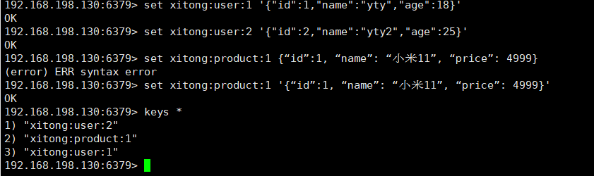
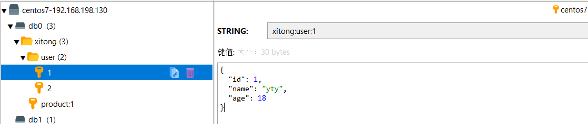
1 | 127.0.0.1:6379> set baidumap:user:1 '{"id":1,"name":"yangtongyu","age":18}' |
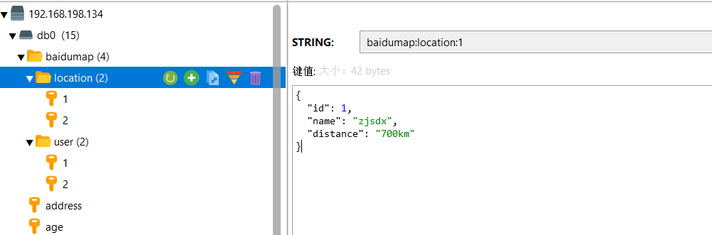
5.4 Hash类型
Hash类型，也叫散列，其value是一个无序字典，类似于Java中的
HashMap结构Hash结构可以将对象中的每个字段独立存储，可以针对单个字段做CRUD
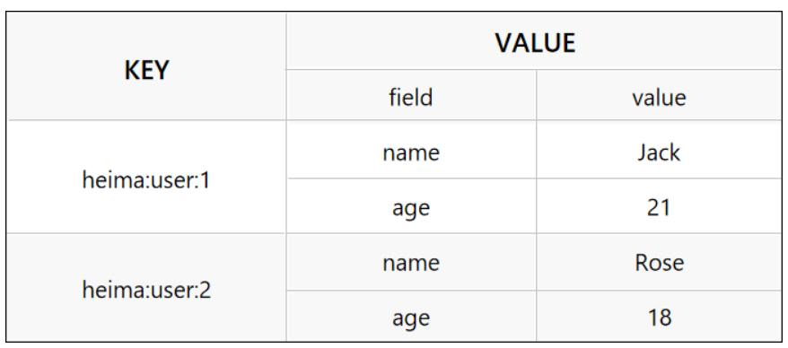
Hash的常见命令有：
命令 描述 HSET key field value 添加或者修改hash类型key的field的值 HGET key field 获取一个hash类型key的field的值 HMSET hmset 和 hset 效果相同 ，4.0之后hmset可以弃用了 HMGET 批量获取多个hash类型key的field的值 HGETALL 获取一个hash类型的key中的所有的field和value HKEYS 获取一个hash类型的key中的所有的field HVALS 获取一个hash类型的key中的所有的value HINCRBY 让一个hash类型key的字段值自增并指定步长 HSETNX 添加一个hash类型的key的field值，前提是这个field不存在，否则不执行 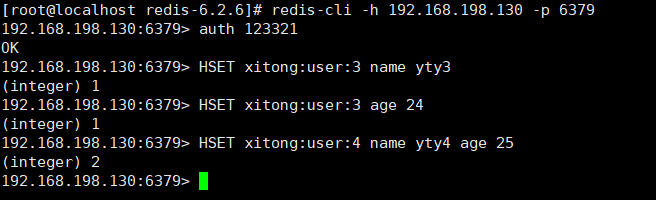
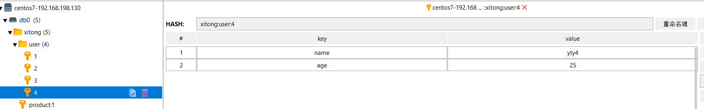
1 | 127.0.0.1:6379> hset baidumap:user:1 name yangtong age 19 |
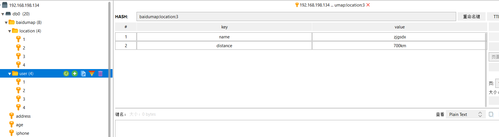
5.5 List类型
Redis中的List类型与Java中的LinkedList类似，可以看做是一个双向链表结构。既可以支持正向检索和也可以支持反向检索
特征也与
LinkedList类似：- 有序
- 元素可以重复
- 插入和删除快
- 查询速度一般
常用来存储一个有序数据，例如：朋友圈点赞列表，评论列表等
List的常见命令有
| 命令 | 描述 |
|---|---|
| LPUSH key element … | 向列表左侧插入一个或多个元素 |
| LPOP key | 移除并返回列表左侧的第一个元素，没有则返回nil |
| RPUSH key element … | 向列表右侧插入一个或多个元素 |
| RPOP key | 移除并返回列表右侧的第一个元素 |
| LRANGE key star end | 返回一段角标范围内的所有元素 |
| BLPOP和BRPOP | 与LPOP和RPOP类似，只不过在没有元素时等待指定时间，而不是直接返回nil |
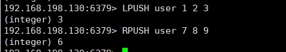
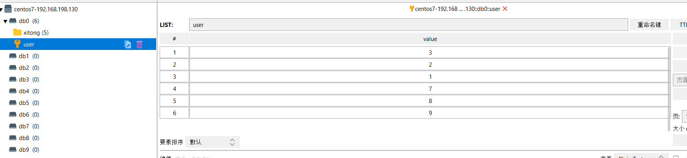
1 | 127.0.0.1:6379> lpush list1 1 2 3 |
思考问题
- 如何利用List结构模拟一个栈?
- 先进后出，入口和出口在同一边
- 如何利用List结构模拟一个队列?
- 先进先出，入口和出口在不同边
- 如何利用List结构模拟一个阻塞队列?
- 入口和出口在不同边
- 出队时采用BLPOP或BRPOP
5.6 Set类型
- Redis的Set结构与Java中的HashSet类似，可以看做是一个value为null的HashMap。因为也是一个hash表，因此具备与HashSet类似的特征
- 无序
- 元素不可重复
- 查找快
- 支持交集、并集、差集等功能
Set的常见命令有
| 命令 | 描述 |
|---|---|
| SADD key member … | 向set中添加一个或多个元素 |
| SREM key member … | 移除set中的指定元素 |
| SCARD key | 返回set中元素的个数 |
| SISMEMBER key member | 判断一个元素是否存在于set中 |
| SMEMBERS | 获取set中的所有元素 |
| SINTER key1 key2 … | 求key1与key2的交集 |
| SDIFF key1 key2 … | 求key1与key2的差集 |
| SUNION key1 key2 … | 求key1和key2的并集 |
交集、差集、并集图示
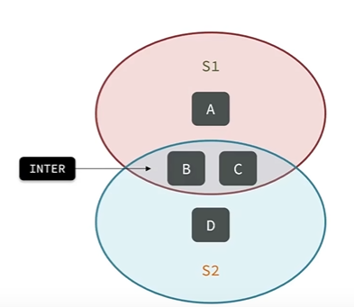
1 | 127.0.0.1:6379> SADD s1 a b c |
5.7 SortedSet类型
Redis的SortedSet是一个可排序的set集合，与Java中的TreeSet有些类似，但底层数据结构却差别很大。SortedSet中的每一个元素都带有一个score属性，可以基于score属性对元素排序，底层的实现是一个跳表（SkipList）加 hash表
SortedSet具备下列特性：
- 可排序
- 元素不重复
- 查询速度快
因为SortedSet的可排序特性，经常被用来实现排行榜这样的功能
SortedSet的常见命令有
| 命令 | 描述 |
|---|---|
| ZADD key score member | 添加一个或多个元素到sorted set ，如果已经存在则更新其score值 |
| ZREM key member | 删除sorted set中的一个指定元素 |
| ZSCORE key member | 获取sorted set中的指定元素的score值 |
| ZRANK key member | 获取sorted set 中的指定元素的排名 |
| ZCARD key | 获取sorted set中的元素个数 |
| ZCOUNT key min max | 统计score值在给定范围内的所有元素的个数 |
| ZINCRBY key increment member | 让sorted set中的指定元素自增，步长为指定的increment值 |
| ZRANGE key min max | 按照score排序后，获取指定排名范围内的元素 |
| ZRANGEBYSCORE key min max | 按照score排序后，获取指定score范围内的元素 |
| ZDIFF、ZINTER、ZUNION | 求差集、交集、并集 |
注意：所有的排名默认都是升序，如果要降序则在命令的Z后面添加REV即可
1 | 127.0.0.1:6379> ZADD ss 85 Jack 89 Lucy 82 Rose 95 Tom 78 Jerry 92 Amy 76 Miles |
6.Java客户端
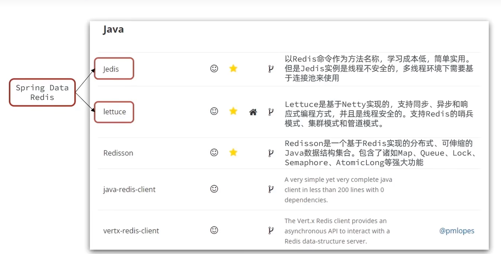
6.1 Jedis
6.1.1 Jedis快速入门
Jedis的官网地址： https://github.com/jedis
新建一个Maven工程并引入以下依赖
1
2
3
4
5
6
7
8
9
10
11
12
13
14<!--引入Jedis依赖-->
<dependency>
<groupId>redis.clients</groupId>
<artifactId>jedis</artifactId>
<version>4.3.0</version>
</dependency>
<!--引入单元测试依赖-->
<dependency>
<groupId>org.junit.jupiter</groupId>
<artifactId>junit-jupiter</artifactId>
<version>5.8.2</version>
<scope>test</scope>
</dependency>编写测试类并与Redis建立连接
1
2
3
4
5
6
7
8
9
10
11private Jedis jedis;
//被该注解修饰的方法每次执行其他方法前自动执行
void setUp(){
// 1. 获取连接
jedis = new Jedis("192.168.230.88",6379);
// 2. 设置密码
jedis.auth("123456");
// 3. 选择库（默认是下标为0的库）
jedis.select(0);
}编写一个操作数据的方法（这里以操作String类型为例）
1
2
3
4
5
6
7
8
9
10
public void testString(){
// 1.往redis中存放一条String类型的数据并获取返回结果
String result = jedis.set("name", "峡谷杨爹");
System.out.println("result = " + result);
// 2.从redis中获取一条数据
String name = jedis.get("name");
System.out.println("name = " + name);
}最后不要忘记编写一个释放资源的方法
1
2
3
4
5
6
7//被该注解修饰的方法会在每次执行其他方法后执行
void tearDown(){
// 1.释放资源
if (jedis != null){
jedis.close();
}
}执行
testString()方法后测试结果如图所示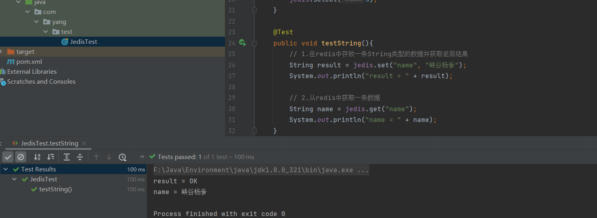
1 | package com.yang.test; |
6.1.2 Jedis连接池
Jedis本身是线程不安全的，并且频繁的创建和销毁连接会有性能损耗，因此我们推荐大家使用Jedis连接池代替Jedis的直连方式
1 | import redis.clients.jedis.Jedis; |
1 | package com.yang.test; |
6.2 SpringDataRedis
SpringData是Spring中数据操作的模块，包含对各种数据库的集成，其中对Redis的集成模块就叫做
SpringDataRedis
- 提供了对不同Redis客户端的整合（
Lettuce和Jedis） - 提供了
RedisTemplate统一API来操作Redis - 支持Redis的发布订阅模型
- 支持Redis哨兵和Redis集群
- 支持基于Lettuce的响应式编程
- 支持基于JDK、JSON、字符串、Spring对象的数据序列化及反序列化
- 支持基于Redis的JDKCollection实现
SpringDataRedis中提供了RedisTemplate工具类，其中封装了各种对Redis的操作。并且将不同数据类型的操作API封装到了不同的类型中：
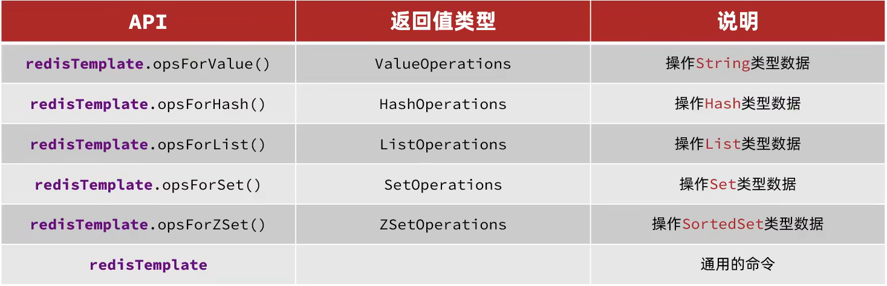
6.2.1 SpringDataRedis快速入门
SpringBoot已经提供了对SpringDataRedis的支持，使用非常简单
首先新建一个Spring Boot工程
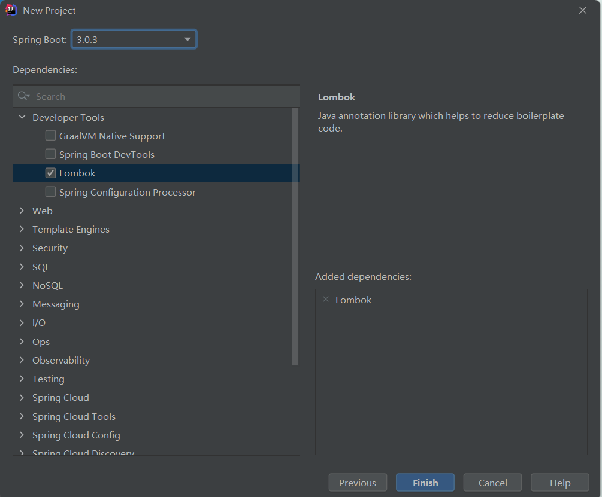
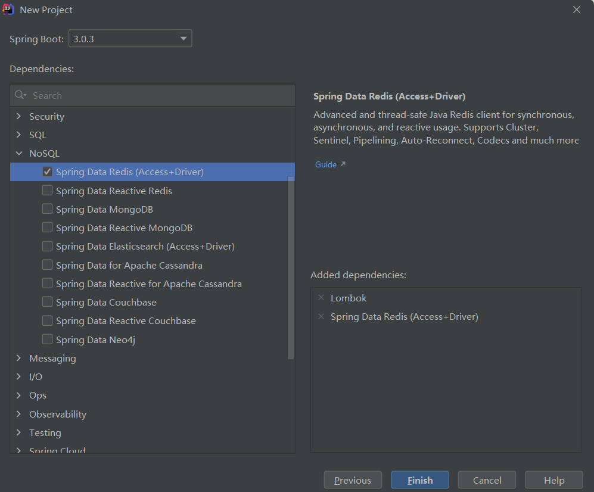
然后引入连接池依赖
1
2
3
4
5<!--连接池依赖-->
<dependency>
<groupId>org.apache.commons</groupId>
<artifactId>commons-pool2</artifactId>
</dependency>编写配置文件
application.yml（连接池的配置在实际开发中是根据需求来的）1
2
3
4
5
6
7
8
9
10
11spring:
redis:
host: 192.168.198.134 #指定redis所在的host
port: 6379 #指定redis的端口
password: 123321 #设置redis密码
lettuce:
pool:
max-active: 8 #最大连接数
max-idle: 8 #最大空闲数
min-idle: 0 #最小空闲数
max-wait: 100ms #连接等待时间编写测试类执行测试方法
1
2
3
4
5
6
7
8
9
10
11
12
13
14
15
16
17
18
19
20
21
22
23
24
25import org.junit.jupiter.api.Test;
import org.springframework.beans.factory.annotation.Autowired;
import org.springframework.boot.test.context.SpringBootTest;
import org.springframework.data.redis.core.RedisTemplate;
import org.springframework.data.redis.core.ValueOperations;
class SpringdataredisDemoApplicationTests {
private RedisTemplate redisTemplate;
void testString() {
// 1.通过RedisTemplate获取操作String类型的ValueOperations对象
ValueOperations ops = redisTemplate.opsForValue();
// 2.插入一条数据
ops.set("name","齐天大圣");
// 3.获取数据
String name = (String) ops.get("name");
System.out.println("name = " + name);
}
}
6.2.2 RedisSerializer配置
RedisTemplate可以接收任意Object作为值写入Redis，只不过写入前会把Object序列化为字节形式，
默认是采用JDK序列化，得到的结果是这样的
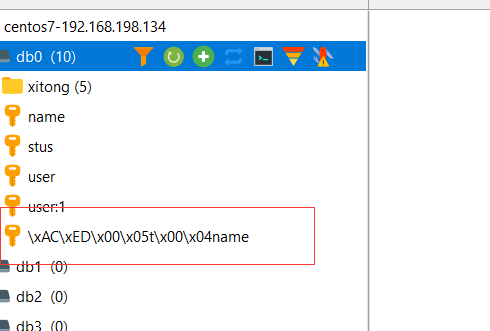
缺点：
- 可读性差
- 内存占用较大
那么如何解决以上的问题呢？我们可以通过自定义RedisTemplate序列化的方式来解决。l
1 | <!--Jackson依赖--> |
编写一个配置类
RedisConfig1
2
3
4
5
6
7
8
9
10
11
12
13
14
15
16
17
18
19
20
21
22
23
24
25
public class RedisConfig {
public RedisTemplate<String,Object> redisTemplate(RedisConnectionFactory factory){
// 1.创建RedisTemplate对象
RedisTemplate<String ,Object> redisTemplate = new RedisTemplate<>();
// 2.设置连接工厂
redisTemplate.setConnectionFactory(factory);
// 3.创建序列化对象
StringRedisSerializer stringRedisSerializer = new StringRedisSerializer();
GenericJackson2JsonRedisSerializer genericJackson2JsonRedisSerializer = new GenericJackson2JsonRedisSerializer();
// 4.设置key和hashKey采用String的序列化方式
redisTemplate.setKeySerializer(stringRedisSerializer);
redisTemplate.setHashKeySerializer(stringRedisSerializer);
// 5.设置value和hashValue采用json的序列化方式
redisTemplate.setValueSerializer(genericJackson2JsonRedisSerializer);
redisTemplate.setHashValueSerializer(genericJackson2JsonRedisSerializer);
return redisTemplate;
}
}此时我们已经将RedisTemplate的key设置为
String序列化，value设置为Json序列化的方式，再来执行方法测试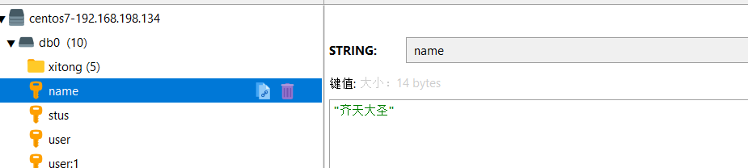
由于我们设置的value序列化方式是Json的，因此我们可以直接向redis中插入一个对象
1
2
3
4
5
6
void testSaveUser() {
redisTemplate.opsForValue().set("user:100", new User("猴子", 21));
User user = (User) redisTemplate.opsForValue().get("user:100");
System.out.println("User = " + user);
}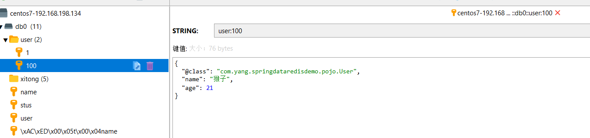
尽管Json序列化可以满足我们的需求，但是依旧存在一些问题
如上图所示，为了在反序列化时知道对象的类型，JSON序列化器会将类的class类型写入json结果中，存入Redis，会带来额外的内存开销
那么我们如何解决这个问题呢？可以通过下文的
StringRedisTemplate来解决这个问题
6.2.3 StringRedisTemplate
为了节省内存空间，我们并不会使用JSON序列化器来处理value，而是统一使用String序列化器，要求只能存储String类型的key和value。当需要存储Java对象时，手动完成对象的序列化和反序列化。
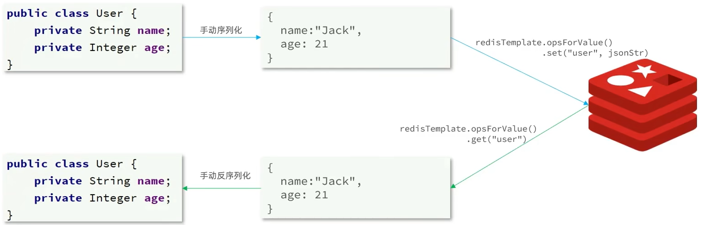
Spring默认提供了一个StringRedisTemplate类，它的key和value的序列化方式默认就是String方式。省去了我们自定义RedisTemplate的过程
我们可以直接编写一个测试类使用StringRedisTemplate来执行以下方法
1
2
3
4
5
6
7
8
9
10
11
12
13
14
15
16
17
18
19
20
21
22
23
24
25
26
27
28
29
30
31
32
33import com.fasterxml.jackson.core.JsonProcessingException;
import com.fasterxml.jackson.databind.ObjectMapper;
import com.yang.springdataredisdemo.pojo.User;
import org.junit.jupiter.api.Test;
import org.springframework.boot.test.context.SpringBootTest;
import org.springframework.data.redis.core.StringRedisTemplate;
import javax.annotation.Resource;
class RedisStringTemplateTest {
private StringRedisTemplate stringRedisTemplate;
private static final ObjectMapper mapper = new ObjectMapper();
void testSaveUser() throws JsonProcessingException {
// 1.创建对象
User user = new User("花木兰", 17);
// 2.将要存入的对象通过Json序列化对象转换为字符串
String userJson1 = mapper.writeValueAsString(user);
// 3.通过StringRedisTemplate将数据存入redis
stringRedisTemplate.opsForValue().set("user:200",userJson1);
// 4.通过key取出value
String userJson2 = stringRedisTemplate.opsForValue().get("user:200");
// 5.由于取出的值是String类型的Json字符串，因此我们需要通过Json序列化对象来转换为java对象
User user1 = mapper.readValue(userJson2, User.class);
// 6.打印结果
System.out.println("user1 = " + user1);
}
}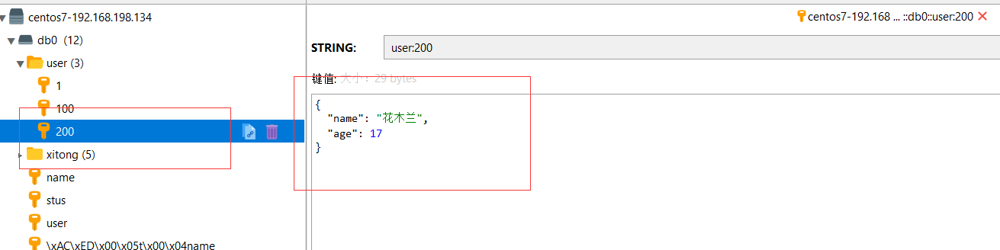
6.3 总结
RedisTemplate的两种序列化实践方案，两种方案各有各的优缺点，可以根据实际情况选择使用。
方案一：
- 自定义RedisTemplate
- 修改RedisTemplate的序列化器为GenericJackson2JsonRedisSerializer
方案二：
- 使用StringRedisTemplate
- 写入Redis时，手动把对象序列化为JSON
- 读取Redis时，手动把读取到的JSON反序列化为对象

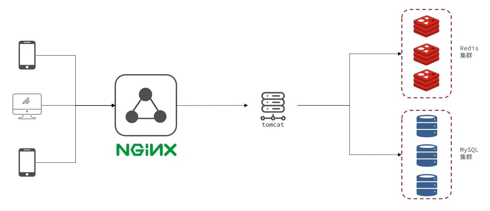
7.短信登录
7.1 环境准备
7.2 基于Session实现登录
发送验证码：
用户在提交手机号后，会校验手机号是否合法，如果不合法，则要求用户重新输入手机号
如果手机号合法，后台此时生成对应的验证码，同时将验证码进行保存，然后再通过短信的方式将验证码发送给用户
短信验证码登录、注册：
用户将验证码和手机号进行输入，后台从session中拿到当前验证码，然后和用户输入的验证码进行校验，如果不一致，则无法通过校验，如果一致，则后台根据手机号查询用户，如果用户不存在，则为用户创建账号信息，保存到数据库，无论是否存在，都会将用户信息保存到session中，方便后续获得当前登录信息
校验登录状态:
用户在请求时候，会从cookie中携带者JsessionId到后台，后台通过JsessionId从session中拿到用户信息，如果没有session信息，则进行拦截，如果有session信息，则将用户信息保存到threadLocal中，并且放行
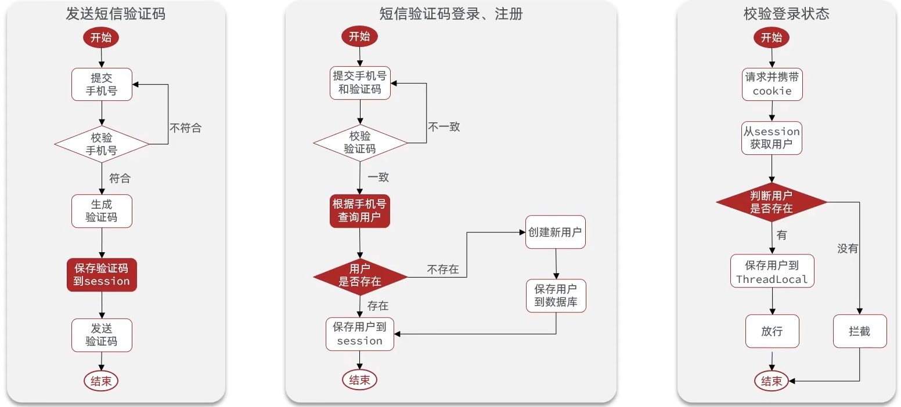
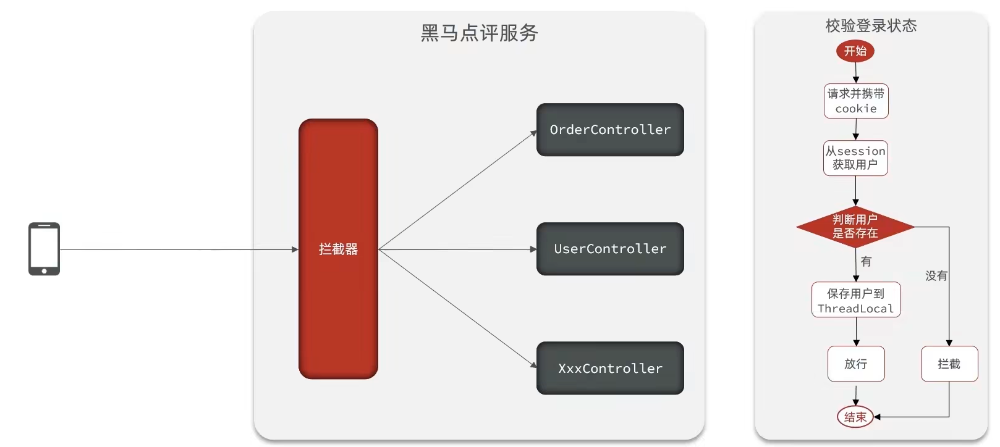
7.3 集群的session共享问题
session共享问题：多台Tomcat并不共享session存储空间，当请求切换到不同tomcat服务时导致数据丢失的问题
session的替代方案应该满足：
- 数据共享
- 内存存储
- key、value结构
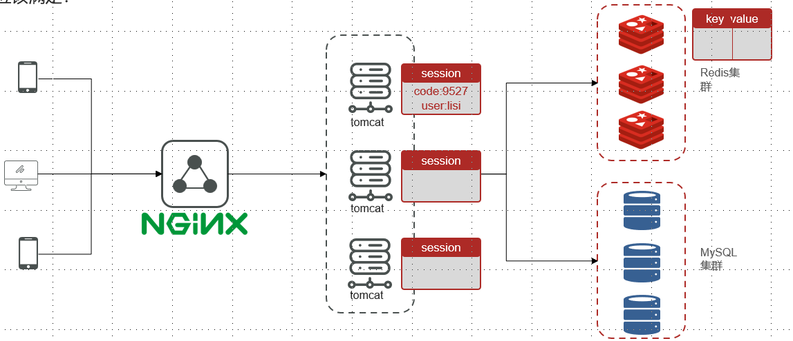
核心思路分析：
每个tomcat中都有一份属于自己的session,假设用户第一次访问第一台tomcat，并且把自己的信息存放到第一台服务器的session中，但是第二次这个用户访问到了第二台tomcat，那么在第二台服务器上，肯定没有第一台服务器存放的session，所以此时 整个登录拦截功能就会出现问题，我们能如何解决这个问题呢？早期的方案是session拷贝，就是说虽然每个tomcat上都有不同的session，但是每当任意一台服务器的session修改时，都会同步给其他的Tomcat服务器的session，这样的话，就可以实现session的共享了
但是这种方案具有两个大问题
1、每台服务器中都有完整的一份session数据，服务器压力过大。
2、session拷贝数据时，可能会出现延迟
所以后来采用的方案都是基于redis来完成，把session换成redis，redis数据本身就是共享的，就可以避免session共享的问题了
7.4 基于Redis实现共享session登录
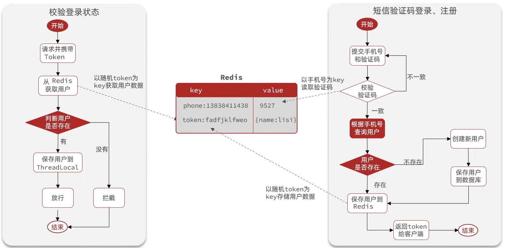
8.商户查询缓存
8.1 什么是缓存
缓存就是数据交换的缓冲区（称作Cache [ kæʃ ] ），是存贮数据的临时地方，一般读写性能较高
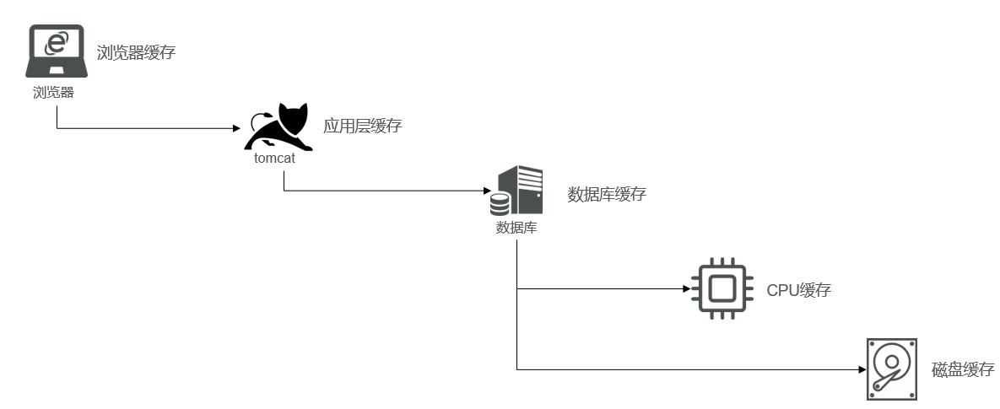
8.2 商户缓存
8.3 缓存更新策略
缓存更新是redis为了节约内存而设计出来的一个东西，主要是因为内存数据宝贵，当我们向redis插入太多数据，此时就可能会导致缓存中的数据过多，所以redis会对部分数据进行更新，或者把他叫为淘汰更合适。
内存淘汰：redis自动进行，当redis内存达到咱们设定的max-memery的时候，会自动触发淘汰机制，淘汰掉一些不重要的数据(可以自己设置策略方式)
超时剔除：当我们给redis设置了过期时间ttl之后，redis会将超时的数据进行删除，方便咱们继续使用缓存
主动更新：我们可以手动调用方法把缓存删掉，通常用于解决缓存和数据库不一致问题
- 业务场景：
- 低一致性需求：使用内存淘汰机制。例如店铺类型的查询缓存
- 高一致性需求：主动更新，并以超时剔除作为兜底方案。例如店铺详情查询的缓存
8.3.1 数据库缓存不一致解决方案
由于我们的缓存的数据源来自于数据库,而数据库的数据是会发生变化的,因此,如果当数据库中数据发生变化,而缓存却没有同步,此时就会有一致性问题存在,其后果是:
用户使用缓存中的过时数据,就会产生类似多线程数据安全问题,从而影响业务,产品口碑等;怎么解决呢？有如下几种方案
Cache Aside Pattern 人工编码方式：缓存调用者在更新完数据库后再去更新缓存，也称之为双写方案
Read/Write Through Pattern : 由系统本身完成，数据库与缓存的问题交由系统本身去处理
Write Behind Caching Pattern ：调用者只操作缓存，其他线程去异步处理数据库，实现最终一致
8.3.2 数据库和缓存不一致采用什么方案
综合考虑使用方案一，但是方案一调用者如何处理呢？这里有几个问题
操作缓存和数据库时有三个问题需要考虑：
如果采用第一个方案，那么假设每次操作数据库后，都操作缓存，但是中间如果没有人查询，那么这个更新动作实际上只有最后一次生效，中间的更新动作意义并不大，我们可以把缓存删除，等待再次查询时，将缓存中的数据加载出来
删除缓存还是更新缓存？
- 更新缓存：每次更新数据库都更新缓存，无效写操作较多
- 删除缓存：更新数据库时让缓存失效，查询时再更新缓存
如何保证缓存与数据库的操作的同时成功或失败？
- 单体系统，将缓存与数据库操作放在一个事务
- 分布式系统，利用TCC等分布式事务方案
应该具体操作缓存还是操作数据库，我们应当是先操作数据库，再删除缓存，原因在于，如果你选择第一种方案，在两个线程并发来访问时，假设线程1先来，他先把缓存删了，此时线程2过来，他查询缓存数据并不存在，此时他写入缓存，当他写入缓存后，线程1再执行更新动作时，实际上写入的就是旧的数据，新的数据被旧数据覆盖了。
- 先操作缓存还是先操作数据库？
- 先删除缓存，再操作数据库
- 先操作数据库，再删除缓存
8.3.3 缓存更新策略的最佳实践方案：
1.低一致性需求：使用Redis自带的内存淘汰机制
2.高一致性需求：主动更新，并以超时剔除作为兜底方案
读操作：
- 缓存命中则直接返回
- 缓存未命中则查询数据库，并写入缓存，设定超时时间
写操作：
- 先写数据库，然后再删除缓存
- 要确保数据库与缓存操作的原子性
8.4 实现商铺和缓存与数据库双写一致
核心思路如下：
修改ShopController中的业务逻辑，满足下面的需求：
根据id查询店铺时，如果缓存未命中，则查询数据库，将数据库结果写入缓存，并设置超时时间
根据id修改店铺时，先修改数据库，再删除缓存
8.5 缓存穿透
缓存穿透：缓存穿透是指客户端请求的数据在缓存中和数据库中都不存在，这样缓存永远不会生效，这些请求都会打到数据库。
常见的解决方案有两种：
- 缓存空对象
- 优点：实现简单，维护方便
- 缺点：
- 额外的内存消耗
- 可能造成短期的不一致
- 布隆过滤
- 优点：内存占用较少，没有多余key
- 缺点：
- 实现复杂
- 存在误判可能
缓存空对象思路分析：当我们客户端访问不存在的数据时，先请求redis，但是此时redis中没有数据，此时会访问到数据库，但是数据库中也没有数据，这个数据穿透了缓存，直击数据库，我们都知道数据库能够承载的并发不如redis这么高，如果大量的请求同时过来访问这种不存在的数据，这些请求就都会访问到数据库，简单的解决方案就是哪怕这个数据在数据库中也不存在，我们也把这个数据存入到redis中去，这样，下次用户过来访问这个不存在的数据，那么在redis中也能找到这个数据就不会进入到缓存了
布隆过滤：布隆过滤器其实采用的是哈希思想来解决这个问题，通过一个庞大的二进制数组，走哈希思想去判断当前这个要查询的这个数据是否存在，如果布隆过滤器判断存在，则放行，这个请求会去访问redis，哪怕此时redis中的数据过期了，但是数据库中一定存在这个数据，在数据库中查询出来这个数据后，再将其放入到redis中，
假设布隆过滤器判断这个数据不存在，则直接返回
这种方式优点在于节约内存空间，存在误判，误判原因在于：布隆过滤器走的是哈希思想，只要哈希思想，就可能存在哈希冲突

8.6 编码解决商品查询的缓存穿透问题：
核心思路如下：
在原来的逻辑中，我们如果发现这个数据在mysql中不存在，直接就返回404了，这样是会存在缓存穿透问题的
现在的逻辑中：如果这个数据不存在，我们不会返回404 ，还是会把这个数据写入到Redis中，并且将value设置为空，欧当再次发起查询时，我们如果发现命中之后，判断这个value是否是null，如果是null，则是之前写入的数据，证明是缓存穿透数据，如果不是，则直接返回数据。

小总结：
缓存穿透产生的原因是什么？
- 用户请求的数据在缓存中和数据库中都不存在，不断发起这样的请求，给数据库带来巨大压力
缓存穿透的解决方案有哪些？
- 缓存null值
- 布隆过滤
- 增强id的复杂度，避免被猜测id规律
- 做好数据的基础格式校验
- 加强用户权限校验
- 做好热点参数的限流
8.7 缓存雪崩问题及解决思路
缓存雪崩是指在同一时段大量的缓存key同时失效或者Redis服务宕机，导致大量请求到达数据库，带来巨大压力。
解决方案：
- 给不同的Key的TTL添加随机值
- 利用Redis集群提高服务的可用性
- 给缓存业务添加降级限流策略
- 给业务添加多级缓存

8.8 缓存击穿问题及解决思路
缓存击穿问题也叫热点Key问题，就是一个被高并发访问并且缓存重建业务较复杂的key突然失效了，无数的请求访问会在瞬间给数据库带来巨大的冲击。
常见的解决方案有两种：
- 互斥锁
- 逻辑过期
逻辑分析：假设线程1在查询缓存之后，本来应该去查询数据库，然后把这个数据重新加载到缓存的，此时只要线程1走完这个逻辑，其他线程就都能从缓存中加载这些数据了，但是假设在线程1没有走完的时候，后续的线程2，线程3，线程4同时过来访问当前这个方法， 那么这些线程都不能从缓存中查询到数据，那么他们就会同一时刻来访问查询缓存，都没查到，接着同一时间去访问数据库，同时的去执行数据库代码，对数据库访问压力过大

解决方案一、使用锁来解决：
因为锁能实现互斥性。假设线程过来，只能一个人一个人的来访问数据库，从而避免对于数据库访问压力过大，但这也会影响查询的性能，因为此时会让查询的性能从并行变成了串行，我们可以采用tryLock方法 + double check来解决这样的问题。
假设现在线程1过来访问，他查询缓存没有命中，但是此时他获得到了锁的资源，那么线程1就会一个人去执行逻辑，假设现在线程2过来，线程2在执行过程中，并没有获得到锁，那么线程2就可以进行到休眠，直到线程1把锁释放后，线程2获得到锁，然后再来执行逻辑，此时就能够从缓存中拿到数据了。

解决方案二、逻辑过期方案
方案分析：我们之所以会出现这个缓存击穿问题，主要原因是在于我们对key设置了过期时间，假设我们不设置过期时间，其实就不会有缓存击穿的问题，但是不设置过期时间，这样数据不就一直占用我们内存了吗，我们可以采用逻辑过期方案。
我们把过期时间设置在 redis的value中，注意：这个过期时间并不会直接作用于redis，而是我们后续通过逻辑去处理。假设线程1去查询缓存，然后从value中判断出来当前的数据已经过期了，此时线程1去获得互斥锁，那么其他线程会进行阻塞，获得了锁的线程他会开启一个 线程去进行 以前的重构数据的逻辑，直到新开的线程完成这个逻辑后，才释放锁， 而线程1直接进行返回，假设现在线程3过来访问，由于线程线程2持有着锁，所以线程3无法获得锁，线程3也直接返回数据，只有等到新开的线程2把重建数据构建完后，其他线程才能走返回正确的数据。
这种方案巧妙在于，异步的构建缓存，缺点在于在构建完缓存之前，返回的都是脏数据。

进行对比
互斥锁方案：由于保证了互斥性，所以数据一致，且实现简单，因为仅仅只需要加一把锁而已，也没其他的事情需要操心，所以没有额外的内存消耗，缺点在于有锁就有死锁问题的发生，且只能串行执行性能肯定受到影响
逻辑过期方案： 线程读取过程中不需要等待，性能好，有一个额外的线程持有锁去进行重构数据，但是在重构数据完成前，其他的线程只能返回之前的数据，且实现起来麻烦

8.9 利用互斥锁解决缓存击穿问题
核心思路：相较于原来从缓存中查询不到数据后直接查询数据库而言，现在的方案是 进行查询之后，如果从缓存没有查询到数据，则进行互斥锁的获取，获取互斥锁后，判断是否获得到了锁，如果没有获得到，则休眠，过一会再进行尝试，直到获取到锁为止，才能进行查询
如果获取到了锁的线程，再去进行查询，查询后将数据写入redis，再释放锁，返回数据，利用互斥锁就能保证只有一个线程去执行操作数据库的逻辑，防止缓存击穿

操作锁的代码：
核心思路就是利用redis的setnx方法来表示获取锁，该方法含义是redis中如果没有这个key，则插入成功，返回1，在stringRedisTemplate中返回true， 如果有这个key则插入失败，则返回0，在stringRedisTemplate返回false，我们可以通过true，或者是false，来表示是否有线程成功插入key，成功插入的key的线程我们认为他就是获得到锁的线程。
1 | private boolean tryLock(String key) { |
操作代码：
1 | public Shop queryWithMutex(Long id) { |
8.10 利用逻辑过期解决缓存击穿问题
需求：修改根据id查询商铺的业务，基于逻辑过期方式来解决缓存击穿问题
思路分析：当用户开始查询redis时，判断是否命中，如果没有命中则直接返回空数据，不查询数据库，而一旦命中后，将value取出，判断value中的过期时间是否满足，如果没有过期，则直接返回redis中的数据，如果过期，则在开启独立线程后直接返回之前的数据，独立线程去重构数据，重构完成后释放互斥锁。

8.11 Redis缓存工具封装
基于StringRedisTemplate封装一个缓存工具类，满足下列需求：
- 方法1：将任意Java对象序列化为json并存储在string类型的key中，并且可以设置TTL过期时间
- 方法2：将任意Java对象序列化为json并存储在string类型的key中，并且可以设置逻辑过期时间，用于处理缓
存击穿问题
- 方法3：根据指定的key查询缓存，并反序列化为指定类型，利用缓存空值的方式解决缓存穿透问题
- 方法4：根据指定的key查询缓存，并反序列化为指定类型，需要利用逻辑过期解决缓存击穿问题
9.优惠券秒杀
9.1 全局唯一ID
每个店铺都可以发布优惠券：

当用户抢购时，就会生成订单并保存到tb_voucher_order这张表中，而订单表如果使用数据库自增ID就存在一些问题：
- id的规律性太明显
- 受单表数据量的限制
场景分析：如果我们的id具有太明显的规则，用户或者说商业对手很容易猜测出来我们的一些敏感信息，比如商城在一天时间内，卖出了多少单，这明显不合适。
场景分析二：随着我们商城规模越来越大，mysql的单表的容量不宜超过500W，数据量过大之后，我们要进行拆库拆表，但拆分表了之后，他们从逻辑上讲他们是同一张表，所以他们的id是不能一样的， 于是乎我们需要保证id的唯一性。
全局ID生成器，是一种在分布式系统下用来生成全局唯一ID的工具，一般要满足下列特性：

为了增加ID的安全性，可以不直接使用Redis自增的数值，而是拼接一些其它信息：
符号位：1bit，永远为0
时间戳：31bit，以秒为单位，可以使用69年
序列号：32bit，秒内的计数器，支持每秒产生2^32个不同ID
9.2 Redis实现全局唯一ID
1 |
|
测试类
知识小贴士：关于countdownlatch
countdownlatch名为信号枪：主要的作用是同步协调在多线程的等待于唤醒问题
我们如果没有CountDownLatch ，那么由于程序是异步的，当异步程序没有执行完时，主线程就已经执行完了，然后我们期望的是分线程全部走完之后，主线程再走，所以我们此时需要使用到CountDownLatch
CountDownLatch 中有两个最重要的方法
1、countDown
2、await
await 方法是阻塞方法，我们担心分线程没有执行完时，main线程就先执行，所以使用await可以让main线程阻塞，那么什么时候main线程不再阻塞呢？当CountDownLatch 内部维护的变量变为0时，就不再阻塞，直接放行，那么什么时候CountDownLatch 维护的变量变为0 呢，我们只需要调用一次countDown ，内部变量就减少1，我们让分线程和变量绑定， 执行完一个分线程就减少一个变量，当分线程全部走完，CountDownLatch 维护的变量就是0，此时await就不再阻塞，统计出来的时间也就是所有分线程执行完后的时间。
1 |
|
全局唯一ID生成策略：
- UUID
- Redis自增
- snowflake算法
- 数据库自增
Redis自增ID策略：
- 每天一个key，方便统计订单量
- ID构造是 时间戳 + 计数器
9.3 添加优惠卷
每个店铺都可以发布优惠券，分为平价券和特价券。平价券可以任意购买，而特价券需要秒杀抢购：

tb_voucher：优惠券的基本信息，优惠金额、使用规则等
tb_seckill_voucher：优惠券的库存、开始抢购时间，结束抢购时间。特价优惠券才需要填写这些信息
平价卷由于优惠力度并不是很大，所以是可以任意领取
而代金券由于优惠力度大，所以像第二种卷，就得限制数量，从表结构上也能看出，特价卷除了具有优惠卷的基本信息以外，还具有库存，抢购时间，结束时间等等字段
**新增普通卷代码： **VoucherController
1 |
|
新增秒杀卷代码：
VoucherController
1 |
|
VoucherServiceImpl
1 |
|
9.4 实现秒杀下单
下单核心思路：当我们点击抢购时，会触发右侧的请求，我们只需要编写对应的controller即可

秒杀下单应该思考的内容：
下单时需要判断两点：
- 秒杀是否开始或结束，如果尚未开始或已经结束则无法下单
- 库存是否充足，不足则无法下单
下单核心逻辑分析：
当用户开始进行下单，我们应当去查询优惠卷信息，查询到优惠卷信息，判断是否满足秒杀条件
比如时间是否充足，如果时间充足，则进一步判断库存是否足够，如果两者都满足，则扣减库存，创建订单，然后返回订单id，如果有一个条件不满足则直接结束。

VoucherOrderServiceImpl
1 |
|